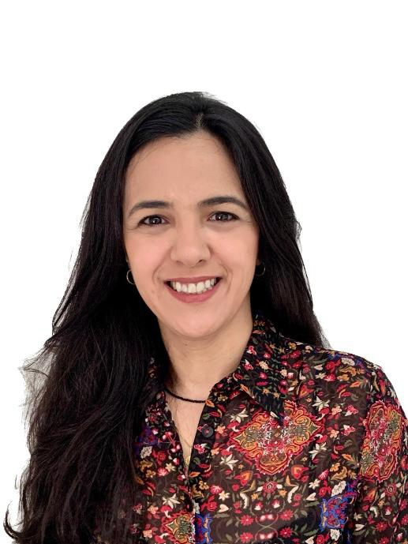

Carla
Sampaio
Arquitetura de soluções, dados e automação para ambientes críticos. Do legado à nuvem. Do dado ao insight.
Ver projetos →
Arquiteta de soluções e especialista em dados, com sólida trajetória em ambientes de alta complexidade no setor financeiro. Atuo na construção de plataformas de dados, arquiteturas modernas em nuvem, automação de infraestrutura e soluções que geram valor real ao negócio.
Liderança técnica com foco em pessoas, colaboração e entrega de resultados sustentáveis.
Website Efêmero Serverless
Infraestrutura que se cria sob demanda e se destrói automaticamente após período de inatividade.
Ver arquitetura →Controle
(Estado)
(Website)
(Timer)
registro_bucket
(Alertas)
Cloud & Infra
- AWS Lambda, API Gateway, S3, DynamoDB, EventBridge, CloudWatch, SNS, SSM
- Terraform (IaC)
- Docker
Dados
- Databricks
- Microsoft Fabric
- SQL / Python
- ETL / ELT
- Modelagem de Dados
Automação & CI/CD
- GitHub Actions
- Terraform Cloud
- OIDC
- Automação de Deploy
- Infraestrutura como Código
Boas práticas
- Segurança por Design
- Observabilidade
- FinOps
- Governança de Dados
- Metodologias Ágeis
Arquiteta de Dados / Engenheira de Dados · Banco do Brasil
Arquitetura de plataformas de dados, modernização de sistemas, automação de infraestrutura, governança e observabilidade.
Consultora de TI / Arquiteta de Dados · Banco do Brasil
Sustentação e evolução de sistemas críticos de crédito, integração entre sistemas e orientação técnica em situações emergenciais.
Analista de Sistemas / Consultora Especialista · Banco do Brasil
Sistemas legados críticos, crédito, cartões, seguros, modelagem de dados, integrações e sustentação.
MBA em Analytics & Big Data
FGV
Pós-graduação
Formação AWS Cloud Solutions Architect
Data Science Academy
120h
Cibersegurança
Pós-graduação
Em andamento
Ciência de Dados
Pós-graduação
Em andamento
Vamos construir soluções que geram impacto.